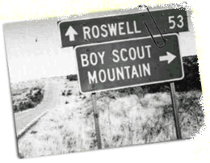

Making Decisions

There are two kinds of control statements: selection (decision) and iteration (loops). Selection is also called branching, because any time you run the program you may take a different path through the code. C++ has the same five branching or selection statements that you met in Java.
Let's start with the if statement which is the simplest conditional statement in C++.
if (condition) { statements }
if (condition) { statements } else { statements }Use the first form when you want to carry out an action when condition is true, but do nothing when it is false. This is known as a "guarded action" pattern.
Use the second form choose between two mutually-exclusive actions. This is the either-or version of the if statement; the "alternative action" idiom or pattern.
Here's an alternative-action example which tells if an integer n is even or odd.
cout << "The number " << n << " is ";
if (n % 2 == 0)
{
cout << "even." << endl;
}
else
{
cout << "odd." << endl;
} This course content is offered under a
CC
Attribution Non-Commercial license. Content in this course
can be considered under this license unless otherwise noted.
This course content is offered under a
CC
Attribution Non-Commercial license. Content in this course
can be considered under this license unless otherwise noted.